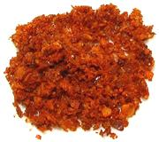
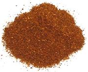
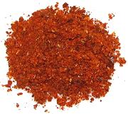
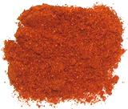

SAFARI
Users
Featured on this page are chilis of general interest in Mexico and North America. For other regions, see the regional pages linked from here.
Buying & Storing Powder & Flake
Varieties - Powder & Flake
Varieties - Chilis: Whole, Fresh & Dried
- with History, Background and Health infoSauces & Potions
- common and uncommon varieties.Hotness
- heat scale and chart
Buying & Storing Powder & Flake
Buy chili powders and flake from a reliable source with high turnover, usually an ethnic or multi-ethnic market - or grind your own. The little whirling blade coffee grinders are perfect for grinding dried chilis.
Chili powders and flake are perishable, but with proper storage they will last at least a year. Store in a well sealed spice jar kept away from heat and direct sunlight, which will destroy powders quickly. If you notice a color change (getting less red), discard and replace.
Varieties
Our list covers mostly chilis and powders you are likely to find available for purchase in the North America, (particularly California) or which are important to a particular cuisine.
The chilis pictures and the hotness ratings (H#) are mostly from Southern California and Mexican grown examples. Results may differ elsewhere. Caution: The heat ratings are typical, but actual variation is wide depending on soil, the perversity of chili plants - and imprecision in labeling. Always test to avoid disappointment (or devastation).
Aji Amarillo
- [C. baccatum var. pendulum]In Peru this chili is usually used fresh, but in neighboring Bolivia
it is most commonly used as dried powder. This powder is orange in color
and moderately hot at about H4.
I have yet to see this powder here in Los Angeles, but dried whole
chilis are available from Latino markets, so I just grind them in my
spice grinder.
Aleppo
- [pul biber (Turkey (flake pepper)); Capsicum annuum]
Aleppo Mild powder, hotness H1
is certainly one of the finest low heat powders available. It is much
sweeter, tastier and a little hotter than American paprika. Aleppo Extra
Hot (H3) is also available, and
while hotter still has excellent flavor. These chilis are grown in northern
Syria and are suitable for Lebanese, Turkish and Persian cooking. The
photo is of "extra hot", the samples of sweet I've encountered have been
a bit more maroon in color. Subst: For Aleppo Extra Hot, real
Hungarian Hot Paprika will work.
Korean Flake (not powder) is less sweet and
somewhat hotter. For Aleppo Mild, a real Hungarian Sweet
Paprika, with a tiny bit of hotter chili powder.
Aleppo Extra Hot makes an excellent substitute for Indian
Kashmir, which is much harder to find in North America.
California Chili Powder

Caution: this comes two ways - American and Mexican. The
American is a seasoning blend, generally made from California or New
Mexico chilis, cumin, cayenne, oregano, salt, onion powder and/or garlic
powder. The Mexican will be plain ground California chilis and will list
no other ingredients, and be around
H2.
Cayenne

Hotness H8 a distinctly hot
powder, usually without much flavor, Cayenne is the "standard" for adding
heat to recipes without greatly affecting the flavor, including adding
heat to California and New Mexico chili powder mixes. Sometimes it's
made from actual Cayenne chilis but more often not. It varies in color and
is often of a duller and less red color than the version in the photo which
was made by one of the big Mexican chili companies.
Chili Powder - Generic
[Chinese Chili Pepper; Tien Tsin (China); Hontaka, Santaka, (Japan); C. annuum]
China exports vast quantities of Chili Powder marked just "Chili
Powder", without any indication of type. It is mostly from Japone type
chilis or chilis of very similar heat and taste characteristics and
hotness, about H6 - H7. The
specimen to the left is Japone powder.
Chipotle

Ground chipotle chilis (smoked jalapenos). It has a stronger smoke flavor
than Spanish smoked paprika and is considerably hotter
(H4).
Erjingtiao Chili Flake
 [Er Jing Tiao; Two Vitex; C.annuum]
[Er Jing Tiao; Two Vitex; C.annuum]
Preferred for Chili Oil and Chili Broad Bean Paste in Sichuan, this
unique chili has a strong aroma and taste, but moderate heat.
Subst: Chili Negro
has almost the exact same heat, though is a darker color. It is similarly
aromatic, but noticeably sweeter.
Habanero / Scotch Bonnet / Cameroon
This powder is popular in the Caribbean and West Africa, made from dried
yellow Habaneros or Scotch Bonnets. These chilis are not easy to dry, but
the weather in northern Cameroon is suitable. I make my own, drying orange
Habaneros in an electric dehydrator. Hotness
H10, an extremely hot powder, with fruity Caribbean flavor.
I like this powder, and keep a salt shaker full near the table, so I can
"adjust" dishes I've had to make too mild because of guests. An almost
invisible sprinkle does the job.
India Extra Hot
This is the hottest, up to H8,
of the chili powders sold in the Indian markets here in Southern
California (Paprika, Kashmir, Reshampatti and India Extra Hot). It is about
as hot as Cayenne with better flavor than most Cayennes. Use it for the
cuisines of southern India and on the west coast from Goa on south, or
wherever Cayenne is called for.
Khandella
- [Medium Hot]
This chili powder, actually usually a fine flake, is a bit less sweet
and somewhat hotter (H5) than
Kashmir, and a good choice for all-around Indian cooking where you don't
want too mild or too hot. It is one of my favorites for all-around use in
many cuisines.
Kashmir
- [Kashmiri Mirch (India)]
Hotness H3. Kashmir chili powder
is widely used in Indian cooking, particularly in the relatively softly spiced
meat dishes of the north. It is rarely made from actual Kashmiri chilis, which
are in very short supply, but from other mild, intensely red chilis,
particularly Byadgi / Byadagi. Subst:
Aleppo Extra Hot makes an excellent substitute for Kashmir and is
more available in North America. Aleppo Mild is a little too mild and a lot
sweeter, but some may prefer it, or add a dash of hotter chili. Expatriate
cooks from India often recommend real Hungarian Sweet
Paprika with a dash of Cayenne for hotness.
Korean - Flake and Powder
- [Gochu-garu (flake); Gochujang-yong-gochu-garu (powder)]
Hotness of the flake varies, but is usually between
H2 and
H3, sweet and tasty. The powder
tends to be quite a bit more variable, and can be as low as
H3 and as high as
H5. Unless you read Korean
there will be no hint on the package, you have to try it and see. In
general, for powder, the brighter the red color the milder it will be,
but that's not totally reliable. Both flake and powder are used liberally
for kimchi and other Korean dishes, so turnover at Korean markets is
quick and the product is generally of excellent quality.
Korean Chili Threads
- [Silgochu (Korea)]
These threads are used as a garnish for some Korean dishes. They are
around H3, sweet and tasty.
They used to be laboriously cut with scissors, but it's now done by
machine. The photo specimens, about 0.019 inch wide and up to 4-1/4
inches long, were purchased from a Korean market in Los Angeles for
2015 US $14.19 for 6.5 ounces ($34.93 / pound). The weight usd in a
recipe is minuscule, so 6.5 ounces will last a very long time (they
didn't have any smaller packages).
New Mexico Chili Powder

Caution: This comes two ways, American and Mexican. The
American is a seasoning blend invented in Texas in the 1800s. It is
available in mild and hot versions and is generally made from New Mexico
chilis, paprika, guajillo chilis, black pepper, onion powder and garlic
powder. Cayenne may be added for hotter formulas. The Mexican will be
plain ground New Mexico chilis, will list no other ingredients, and
be around H2.
Paprika, U.S.

Hotness H0. Undistinguished to
slightly bitter in flavor and lacking any heat, U.S. Paprika is pretty
much for decoration only, but often dull in color too. It is usually
ground from New Mexico type pods. Obtain genuine Hungarian or Spanish
paprika if at all possible.
Paprika, Hungarian, Sweet & Hot

Hungarian paprika is sweet, flavorful and brilliant red. "Sweet"
(H0 to H1) and "Hot"
(H2 to H3) versions are sold. Today,
when a recipe calls for "paprika" it means sweet - hot is used mainly as
a "sprinkle" at serving (there are exceptions), but originally all Hungarian
paprika was hot. Though now the signature spice of Hungarian cooking, paprika
was little used until after 1850. It is said the technique for grinding chilis into
fine powder was first developed in Hungary.
Paprika, Spanish
- [Pimentón]
Spanish paprika is made from an entirely different chili than the
Hungarian, coming directly from the New World rather than through Turkey,
and it has a different flavor. It comes in several versions, including
Dulce (Sweet), Agridulce (bittersweet), Picante (Hot, about
(H3)), Ahumado (Smoked, about
(H2)). Hungarian paprikas are
reasonable substitutes for Dulce and Picante, but the others are unique
to Spain.
Peri-peri / Pili-pili / Piri-piri
- [C. frutescens]Made from tiny Bird Chilis, this powder is about as hot as it gets
(H9). The names above are African
and Portuguese, but similar Bird Chilis are used in other regions as well.
Generally you will need to grind this yourself from tiny dried Peri-peri or
similar Bird Chilis - much hotter than the dried Thai Chilis we get around
here. Take all precautions - do not breath even invisible amounts of dust.
The photo specimen was ground from tiny Bird Chilis from India.
Reshampatti
Though whole reshampatti chilis are not much seen in North America, the
ground version is very common in Indian markets here. This chili powder,
actually usually a fine flake, is a bit less sweet and a bit hotter
(H5) than Kashmir, and a good
choice for all-around Indian cooking.